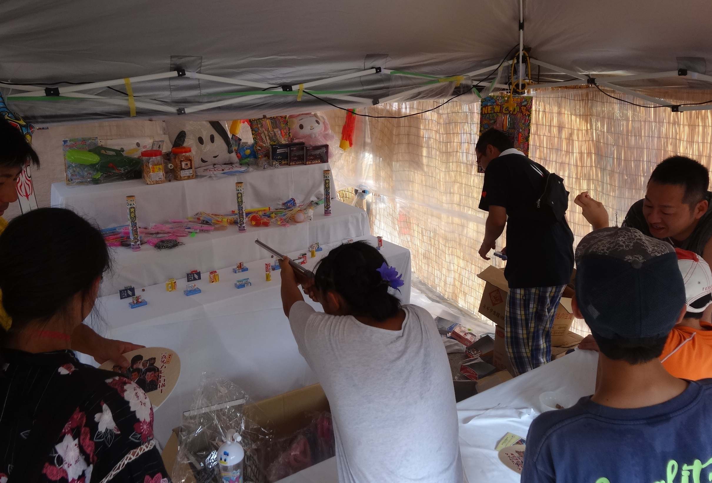
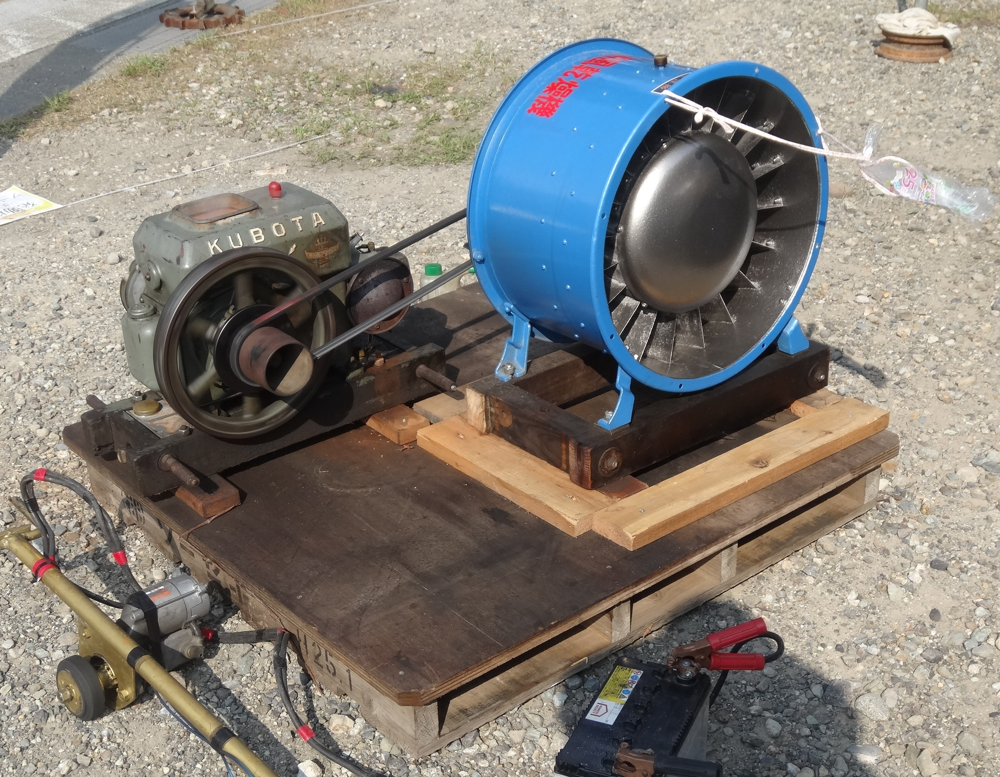
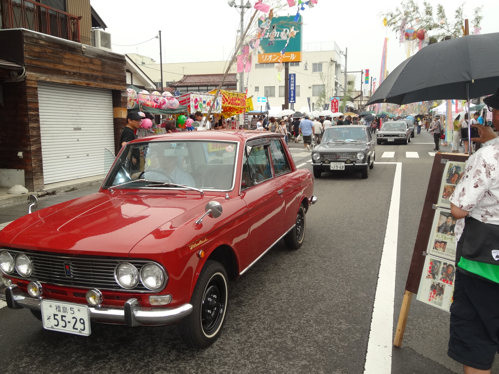
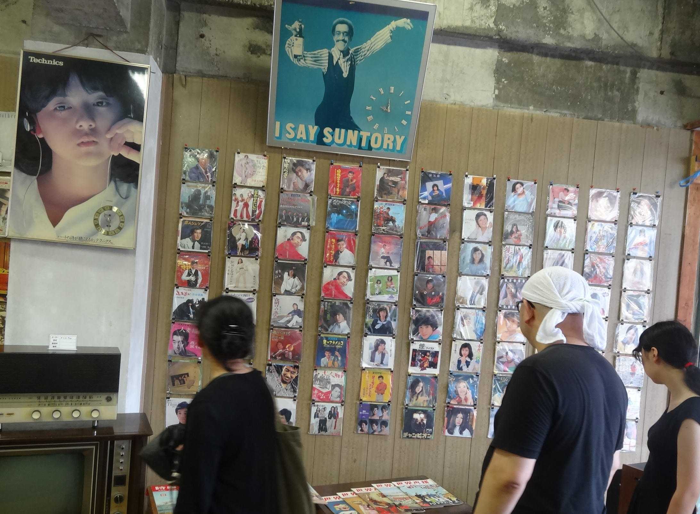

喜多方レトロ横丁について
喜多方レトロ横丁
10月30日、31日、11月3日に開催決定！！！
今年はコロナ感染拡大防止の為、特別回『ミニ喜多方レトロ横丁〜秋の陣〜』として原則喜多方市民限定イベントで開催致します！
毎年開催しているレトロ横丁とイベントやブースは異なりますが、そこも楽しんでいただけたらなと思います。
またある大学と連携して開催されるイベントもあるので、そちらもぜひチェックしてみてくださいね！
今年のレトロ横丁はこんな感じ！
コロナ対策を徹底した上でレトロ横丁商店街（旧ふれあい通り商店街）にて開催致します。
令和３年１０月３０日（土）～３１日（日）
商店街空き店舗、空きスペースを利用した主にミュージアム関連事業
令和３年１１月３日（水）
同日開催される喝祭きたかたや秋の歩行者天国に並行して縁日事業やミニレトロモーターShowなどを含めたミュージアム関連事業
となります。なお、３日の秋の歩行者天国ではテイクアウトの飲食物販売は行われますが、新型コロナウイルス感染症対策として会場内での飲食は禁止となっておりますのでご協力お願いします。
喜多方レトロ横丁って？？
福島県喜多方市にあるふれあい通り商店街で毎年7月に開催されている、昭和レトロがテーマのイベントです。
市民手作りの色鮮やかな七夕飾りが来場者を出迎え、各テーマ別ミュージアムやレトロモーターショー、昔懐かしい遊びや縁日、お化け屋敷や屋台など”昭和”を体感できる50以上ものメニューが開催されます。そこでは昭和時代を知る世代から知らない世代まで、幅広い年代で楽しむことができます。
レトロ横丁には”昭和”ならではのものがたくさん！
当日に行われるイベントやブースについて、少しだけ紹介します！
ここで紹介するのはほんの一部なので、他のイベントやブースは会場に行ってからのお楽しみです！
大人も子供も楽しめる縁日！
一番人気は射的！他にも型抜き、
竹とんぼ、トントン相撲を開催します
発動機運動会！！
この発動機からは一定のリズム音、
独特なオイルの香りがします！
レトロモーターShow！
昭和を走り抜け、皆が憧れた
あの往年の名車が会場に集結！
ミュージックミュージアム！
昔懐かしのレコードが壁一面に…!?
有名なあの方のポスターが…!?
動画を公開しています！！
喜多方レトロ横丁は令和元年に15周年を迎え、その記念動画として作られました！
レトロ横丁本番の数ヶ月前から当日本番の様子まで、人々の熱い思いが込められた動画となっています！
まだレトロ横丁を体験していない方は、是非動画も見ていただいて、
今後は実際足を運んでいただき、
毎年行ってます！という方も違う角度でレトロ横丁を感じていただければ幸いです。
喜多方レトロ横丁15周年記念動画〜レトロ横丁ができるまで〜
⇨ https://www.youtube.com/watch?v=gIWoLLii6ik&t=2s
第17回喜多方レトロ横丁新聞が完成しました!
今年の新聞が完成しましたので、ここに掲載いたします。
今年も内容盛りだくさんです！皆様のご来場お待ちしております。
SNSを開設しました！！
こちらのリンクからご覧ください。最新情報についても更新していきますので、ご確認の程宜しくお願い致します！
⇨ https://twitter.com/kitakata_retoro
LINE
こちらのQRコードを読み取っていただき、友達追加をお願いします！企画の内容や感染症対策、ホームページなどをご覧いただけます。
ある大学と連携？？
私たちも参加します！『わくわくアイティランド』
会津大学2021年度課外プロジェクト「社会調査とICTによる地域サポートプロジェクト」の一環として、VR動画体験、巨大コントローラーを使ったミニゲームの企画を実施します。どんな内容なのかは当日のお楽しみ！会津大学の学生が自ら企画を考えたので、ぜひ会場に足をお運びください！
子どもに大人気！『色水インスタレーション』『レトロ横丁こども園』
会津大学短期大学部の学生による、子どもたちに大人気のおとぎ話や色水遊びを開催します！